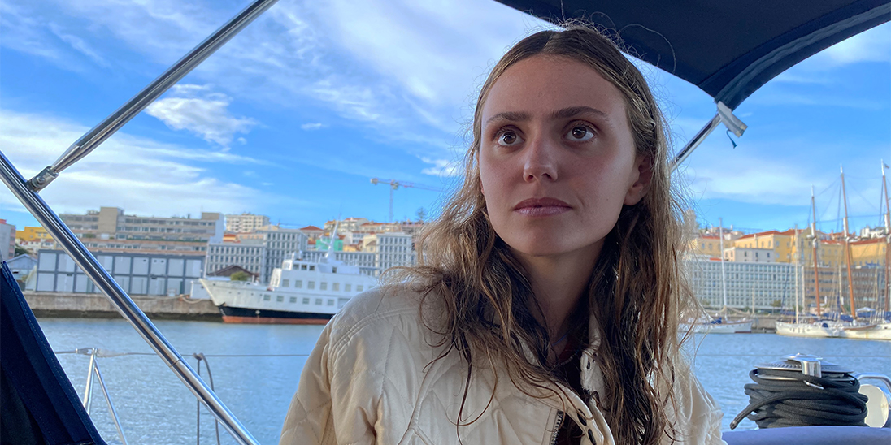

This exercise was designed to improve our photo editing skills. We had to take 6 photographs and edit them in a certain way.
I think all my photo are stylistcly different. One is from my view in Paris or my friends at the beach and even food.
I don't think I kept one theme throughout the all exercice
